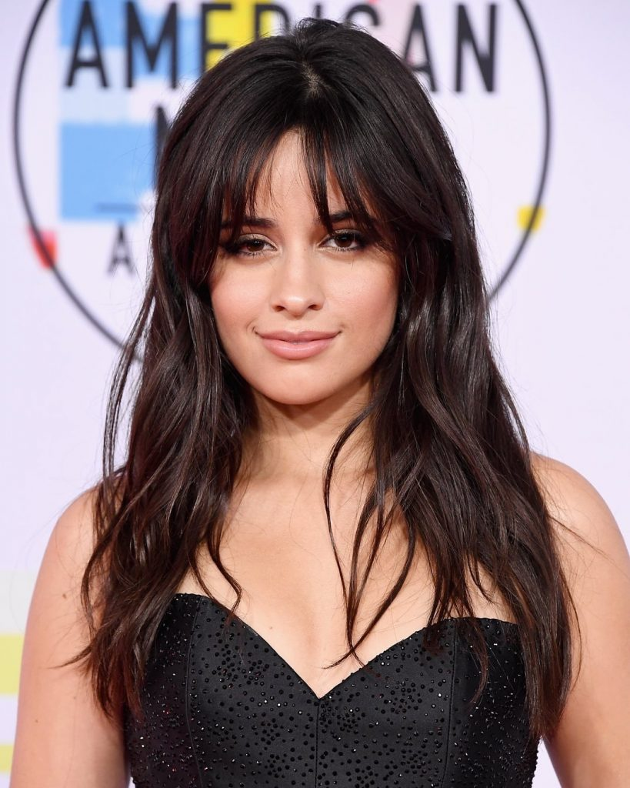
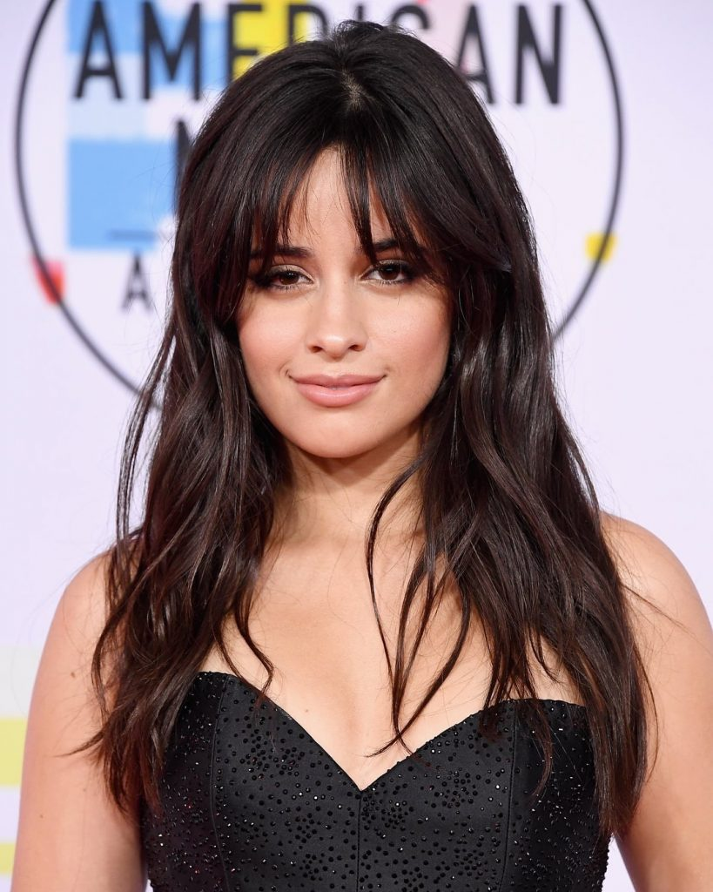
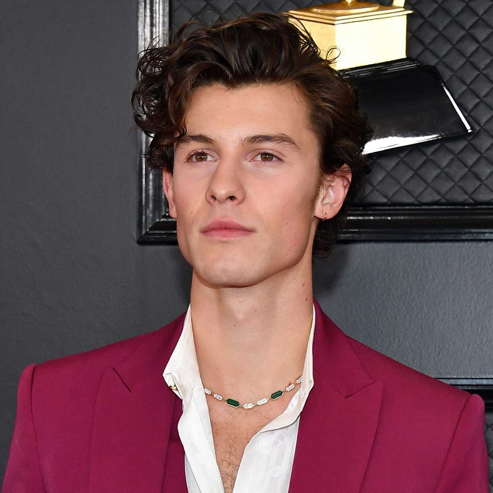

Camila Cabello
Es la mujer mas hermosa del mundo
Mis actividades favoritas son escuchar música, especialmente de mi cantante favorita Camila Cabello, también es ver series en netflix, me gustan muchos los kdramas


Es la mujer mas hermosa del mundo
El hombre mas perfecto del mundo
Camila Cabello
Karla Camila Cabello Estrabao (Cojímar, Cuba, 3 de marzo de 1997)es una cantautora y actriz cubanoestadounidense.Se hizo conocida al haber sido parte del grupo femenino Fifth Harmony. El 18 de diciembre de 2016 se anunció su salida del grupo.
Shown Mendes
Shawn Peter Raul Mendes (Pickering, Ontario, 8 de agosto de 1998) es un cantante, compositor y modelo canadiense. Obtuvo seguidores en 2013, cuando comenzó a publicar versiones de canciones en la aplicación para compartir videos de Vine. Al año siguiente, llamó la atención del gerente artístico Andrew Gertler y del jefe de A&R de Island Records, Ziggy Chareton, lo que lo llevó a firmar un acuerdo con dicho sello discográfico. Desde entonces, lanzó tres álbumes de estudio, encabezó tres giras mundiales y recibió varios premios. En 2015, publicó su primer álbum Handwritten, que tuvo éxito en los Estados Unidos al entrar en la número 1 del Billboard 200, al igual que su sencillo «Stitches» que ingresó a las diez principales posiciones del Billboard Hot 100 en los Estados Unidos y Canadá, y la número uno en la lista de sencillos de Reino Unido.